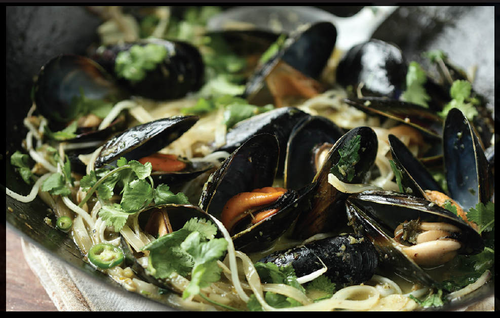

MUSSELS AND RICE NOODLES IN GREEN CURRY BROTH
|
Yield Serves 4 |
Active Time 15 minutes Total Time 20 minutes if using store-bought curry paste |
The coconut fat needs to be in a solid layer at the top of the can, so do not shake the can before opening!
INGREDIENTS
4 ounces (120 g) rice stick noodles
One 13.5-ounce (400 ml) can full-fat coconut milk (see Note)
1 tablespoon (15 ml) rice bran, peanut, or canola oil
¼ cup (60 ml) Thai green curry paste, homemade (here) or store-bought
4 medium garlic cloves (10 to 15 g), thinly sliced
1 medium shallot (1½ ounces/45 g), thinly sliced
1½ pounds (680 g) mussels
1 tablespoon (15 ml) fish sauce, plus more to taste
1 tablespoon (12 g) palm sugar, plus more to taste, broken up in a mortar and pestle
1 cup (1 ounce/30 g) chopped fresh cilantro leaves
1 small fresh green Thai bird or serrano chile, thinly sliced
Large handful of mung bean sprouts
1 tablespoon (15 ml) fresh lime juice from 1 lime, plus lime wedges for serving
This simple curry starts with coconut milk and green curry paste, along with some extra sliced shallots and garlic. As soon as it comes to a boil, the mussels go in and the lid goes down. I cook the mussels just long enough to let them open (nobody likes an overcooked mussel, except perhaps my dog Shabu, who seems to like overcooked anything). Finally, some soaked rice stick noodles, a shower of fresh cilantro leaves and sliced fresh chiles, along with a squeeze of lime juice, finish it off.
DIRECTIONS
1 Place the rice stick noodles in a bowl and cover with hot water. Set aside while you cook the mussels.
2 Scoop 2 tablespoons (30 ml) of thick cream from the top of the can of coconut milk and add to a wok, along with the oil. Cook over medium heat, stirring, until the fat has broken out of the mixture and it’s shimmering and sputtering. Immediately add the curry paste and cook, stirring, scraping, and smearing the curry paste around the bottom of the wok until you see fat start to break out and the curry paste gets a toasty aroma, about 2 minutes.
3 Add the garlic, shallot, and mussels and stir-fry until the mussels are coated in the mixture, about 30 seconds. Add the remaining contents of the coconut milk can, the fish sauce, and the sugar.
4 Increase the heat to high and bring the contents of the wok to a simmer. Cover and cook, adjusting the heat to maintain a steady simmer, until all of the mussels are open and the broth is rich and aromatic, about 3 minutes.
5 Drain the rice stick noodles and add to the wok. Cook, stirring, until the noodles are fully softened, 1 to 2 minutes.
6 Stir in the cilantro, chile, bean sprouts, and lime juice. Season with more fish sauce and sugar to taste if desired. Serve immediately with lime wedges.
